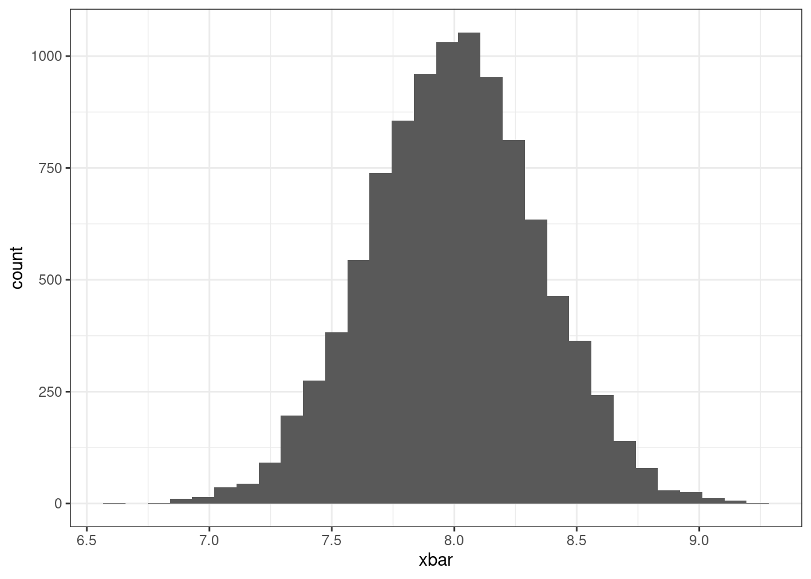
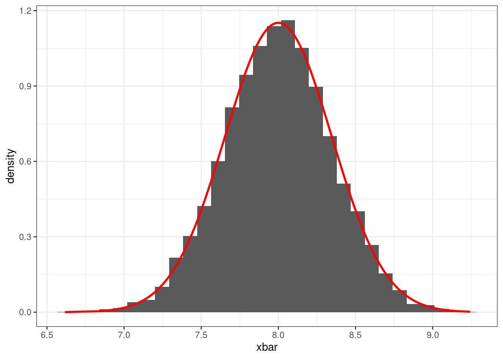
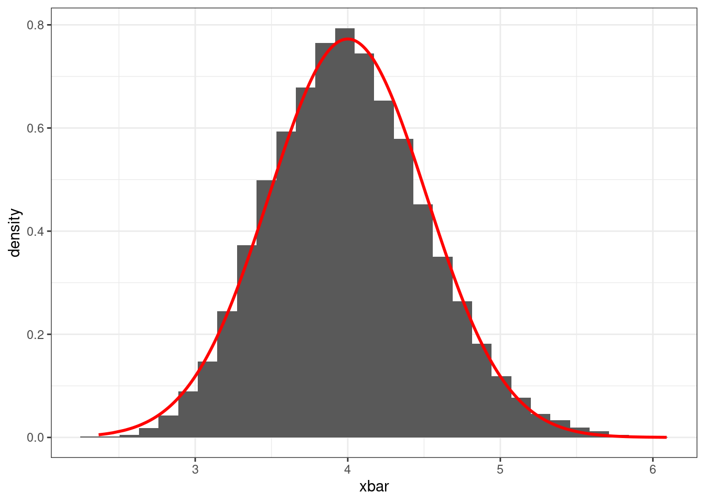
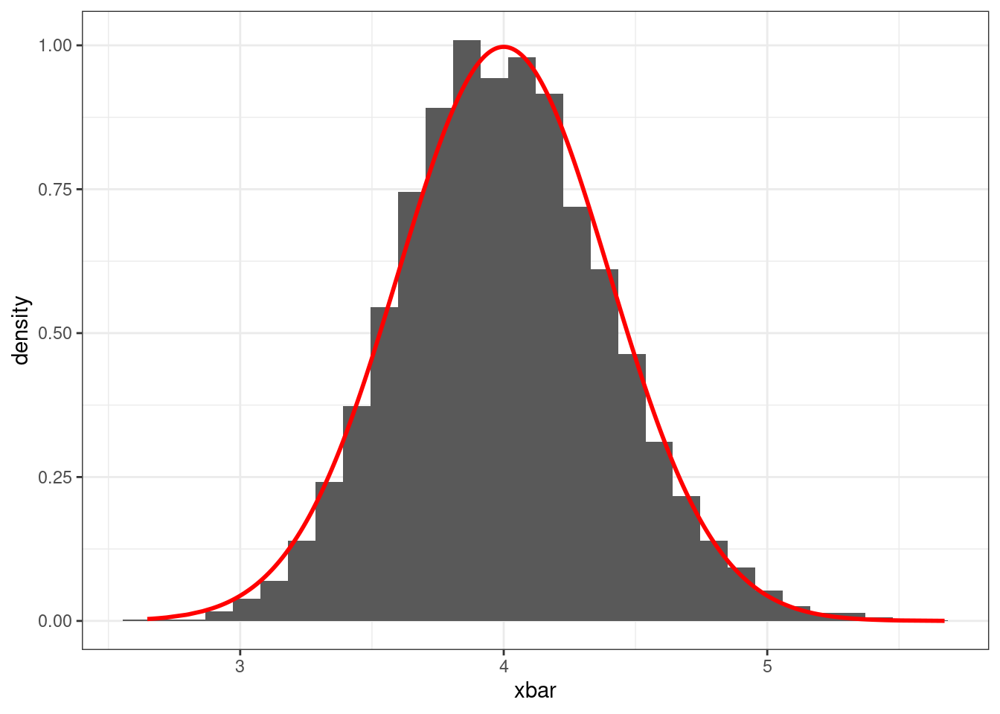
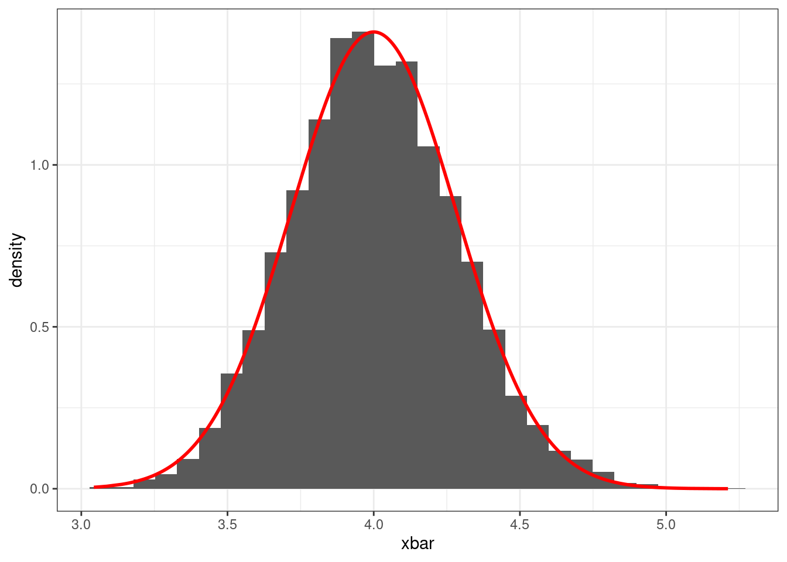
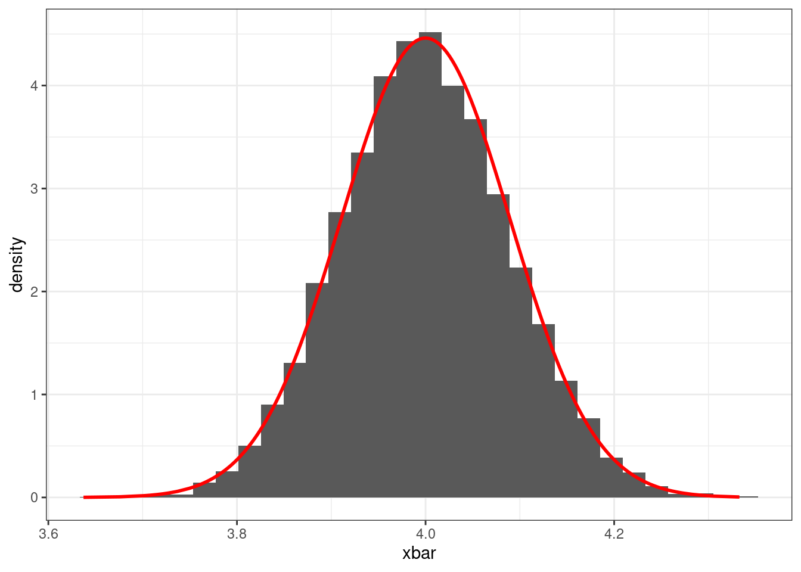

library(ggplot2)9 Statistical Estimators
9.1 R Packages Loaded
9.2 Random Sample
When collecting a random sample, it is believed that the data being collected comes from a probability distribution denoted as \(F(\boldsymbol \theta)\), where \(\boldsymbol \theta = (\theta_1, \theta_2, \ldots, \theta_p)^{\mathrm T}\) is a vector or parameters that describe the distribution. It is assumed that the random sample is a collection of random variables, denoted as \(X_1, \cdots, X_n\), that are considered iid (identical and independently distributed1). Using this random sample, one infer the value of the parameters \(\boldsymbol \theta\) by functions (statistics) on the random sample.
9.3 Statistical Estimators
A statistical estimator is said to be a function designed to provide a point estimate, or interval estimate, of an unknown parameter in \(\boldsymbol \theta\). Common statistical estimators can be the mean, \(\bar X = \frac{1}{n}\sum^n_{i=1} X_i\), or standard deviation, \(S^2 = \frac{1}{n-1}\sum^{n}_{i=1}(X_i - \bar X)^2\). Other estimators can be obtained by applying a procedure such as the maximum likelihood estimation, method of moments or a Bayes Estimator.
9.4 Sampling Distributions
A sampling distribution can be thought as the distribution of an estimator (statistic). The reason is because the estimator is a function of random variables; therefore, the estimator itself is also a random variable. This means that the estimator will vary based on what was randomly drawn for the sample. For example, \(\bar X = \frac{1}{n}\sum^n_{i=1}X_i\) will have a distribution depending on the distribution that generated \(X_1, \ldots, X_n\).
9.4.1 Normal Distribution Example
Assume that \(X_1, \ldots, X_{25}\overset{iid}{\sim}N(8, 3)\), normal distribution with mean 8 and variance 3. Depending on the sample, the value of \(\bar X\) will change due to the randomness being generated. Therefore, a different sample will yield a different value of \(\bar X\). The R code below will demonstrate the potential distribution \(\bar X\) by simulating numerous samples from distribution above and generating the histogram of \(\bar X\).
9.4.1.1
To simulate a random sample of 25 that follows a normal distribution, we can use the rnorm function. Afterwards, we will compute the mean of the sample.
x1 <- rnorm(25, 8, sqrt(3))
mean(x1)#> [1] 8.128019Notice that the value is close to 8. If we generate two different samples, notice how all means calculated are different from each other.
x2 <- rnorm(25, 8, sqrt(3))
mean(x2)#> [1] 7.622466x3 <- rnorm(25, 8, sqrt(3))
mean(x3)#> [1] 7.632177Now to visualize see the distribution of \(\bar X\), we will simulate 10,000 samples, compute the mean of each sample, and construct the a histogram of the computed means.
# Generate 10,000 samples of size 25
x_samples <- replicate(10000, rnorm(25, 8, sqrt(3)))
# Obtain the mean for all the samples
x_means <- colMeans(x_samples)
# Plot a histogram of the sample means
data.frame(xbar = x_means) |>
ggplot(aes(xbar)) +
geom_histogram() +
theme_bw()
Notice that the values of \(\bar X\) are bell shaped centered around the value 8. This makes us think that the sampling distribution for \(\bar X\) may follow a normal distribution. In fact, if a random is said to be generated from a normal distribution, then the distribution will also be normally distributed. For this example, the distribution of \(\bar X\) is \(N(8, 3/25)\). We can plot the probability density function on the histogram and they will closely align.
# Plotting the histogram of the sample means
# And imposing the density function of a normal distribution
data.frame(xbar = x_means, y = dnorm(x_means, 8, sqrt(3/25))) |>
ggplot(aes(xbar, y = after_stat(density))) +
geom_histogram() +
geom_line(aes(xbar, y), col = "red", lwd = 1) +
theme_bw()
9.5 Central Limit Theorem
The central limit theorem is the framework for several of hypothesis tests that are based on probability models.
Central Limit Theorem
If random variables \(X_1, X_2, \cdots, X_n\) are independent come from the same distribution (\(iid\)), \(E(X_i) = \mu <\infty\) (finite), \(Var(X_i) = \sigma^2<\infty\) (finite), then
\[ \frac{\bar X - \mu}{\sigma/\sqrt n} \overset{\circ}{\sim} N(0,1) \]
as \(n\rightarrow \infty\), which implies:
\[ \bar X \overset{\circ}{\sim} N(\mu, \sigma^2/n) \]
The central limit theorem allows us to assume the distribution of \(\bar X\) regardless of the distribution of the sample \(X_1, X_2, \cdots, X_n\). The only condition is that the expected value and variance exist.
9.5.1 \(\chi^2\) Example
Assume that \(X_1, \ldots, X_{25}\overset{iid}{\sim}\chi^2(4)\), Chi-Square distribution with 4 degrees of freedom. According to the central limit theorem, as \(n\rightarrow \infty\), the distribution for \(\bar X\) will approximately be normal with a mean of \(4\) and variance \(8/n\). The following examples show how the distribution begin to follow a normal distribution (red line) as \(n\) increases 15, 30, 50, 100, 1000.
9.5.1.1 \(n = 15\)
# Generate 10,000 samples of size 15
# Obtain the mean for all the samples
x_samples <- replicate(10000, rchisq(15, 4))
x_means <- colMeans(x_samples)
# Plotting the histogram of the sample means
# And imposing the density function of a normal distribution
data.frame(xbar = x_means, y = dnorm(x_means, 4, sqrt(8/15))) |>
ggplot(aes(xbar, y = after_stat(density))) +
geom_histogram() +
geom_line(aes(xbar, y), col = "red", lwd = 1) +
theme_bw()9.5.1.2 \(n = 30\)
# Generate 10,000 samples of size 30
# Obtain the mean for all the samples
x_samples <- replicate(10000, rchisq(30, 4))
x_means <- colMeans(x_samples)
# Plotting the histogram of the sample means
# And imposing the density function of a normal distribution
data.frame(xbar = x_means, y = dnorm(x_means, 4, sqrt(8/30))) |>
ggplot(aes(xbar, y = after_stat(density))) +
geom_histogram() +
geom_line(aes(xbar, y), col = "red", lwd = 1) +
theme_bw()
9.5.1.3 \(n = 50\)
# Generate 10,000 samples of size 50
# Obtain the mean for all the samples
x_samples <- replicate(10000, rchisq(50, 4))
x_means <- colMeans(x_samples)
# Plotting the histogram of the sample means
# And imposing the density function of a normal distribution
data.frame(xbar = x_means, y = dnorm(x_means, 4, sqrt(8/50))) |>
ggplot(aes(xbar, y = after_stat(density))) +
geom_histogram() +
geom_line(aes(xbar, y), col = "red", lwd = 1) +
theme_bw()
9.5.1.4 \(n = 100\)
# Generate 10,000 samples of size 100
# Obtain the mean for all the samples
x_samples <- replicate(10000, rchisq(100, 4))
x_means <- colMeans(x_samples)
# Plotting the histogram of the sample means
# And imposing the density function of a normal distribution
data.frame(xbar = x_means, y = dnorm(x_means, 4, sqrt(8/100))) |>
ggplot(aes(xbar, y = after_stat(density))) +
geom_histogram() +
geom_line(aes(xbar, y), col = "red", lwd = 1) +
theme_bw()
9.5.1.5 \(n = 1000\)
# Generate 10,000 samples of size 1000
# Obtain the mean for all the samples
x_samples <- replicate(10000, rchisq(1000, 4))
x_means <- colMeans(x_samples)
# Plotting the histogram of the sample means
# And imposing the density function of a normal distribution
data.frame(xbar = x_means, y = dnorm(x_means, 4, sqrt(8/1000))) |>
ggplot(aes(xbar, y = after_stat(density))) +
geom_histogram() +
geom_line(aes(xbar, y), col = "red", lwd = 1) +
theme_bw()